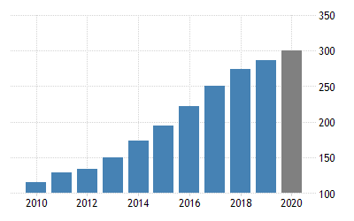

The map of Bangladesh
After many difficulties the country finally gained her teritory and it's the document.
Awami League
We love our contry
The Bangladesh Awami League styles itself as the leader of the "pro-liberation" forces in
Bangladesh, promoting secular and social democratic sections of the political establishment in the country. The
party constitution states, and in two cases defines the reason for, four fundamental principles in guiding its
philosophy and policies.[39] They include:
1)Democracy
2)Socialism
3)Secularism
4)Nationalism
Before the 2008 general elections in Bangladesh, the Awami League announced in its manifesto, its "Vision 2021"
and "Digital Bangladesh" action plans to transform Bangladesh into a fast-developing middle-income country by
2021.[40] The party uses the term "Shonar Bangla", or golden Bengal, to describe its vision for Bangladesh to
become a modern developed nation. The term is reminiscent of Bangladesh's national anthem and a utopian vision
in Bengali nationalism.
Prime Minister of Bangladesh Sheikh Hasina supported calls to remove the Statue of Justice in Bangladesh Supreme
Court. Many criticized these calls, saying Sheikh Hasina was bowing down to the pressure of Islamist political
hard-liners.[41]
In recent years, the party has begun espousing more economically liberal positions, and has moved closer to the
centre of the political spectrum.
Prime Ministar
General Secretary
Jont Secretary
Ecomony
we are at the stage of growing
This is the iamge of our growing rate in ecomony
Here is a video which related with the economy of bangladesh
Our Respossibilites
Our economy must need to update,Our country isn't a rich country.So we need
to expend.
If the govt and the people should do their respossibilites properly then some day we will see
our contry as am amazing area.
Agriculture
Agriculture remains the most important sector of Bangladeshi economy, contributing 19.6 percent to the national GDP and providing employment for 63 percent of the population. Agriculture in Bangladesh is heavily dependent on the weather, and the entire harvest can be wiped out in a matter of hours when cyclones hit the country. According to the World Bank, the total arable land in Bangladesh is 61.2 percent of the total land area (down from 68.3 percent in 1980). Farms are usually very small due to heavily increasing population, unwieldy land ownership, and inheritance regulations. The 3 main crops—rice, jute, and tea—have dominated agricultural exports for decades, although the rice is grown almost entirely for domestic consumption, while jute and tea are the main export earners. In addition to these products, Bangladeshi farmers produce sugarcane, tobacco, cotton, and various fruits and vegetables (sweet potatoes, bananas, pineapples, etc.) for the domestic market. Read more: !!!Click Me!!!!
some agricultural pictures of bangladesh